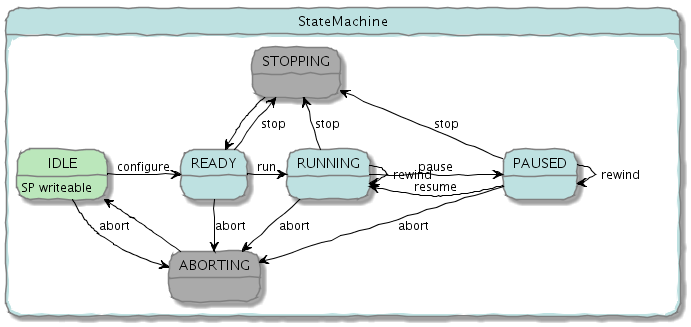

pvDatabaseRPC provides an example of a pvDatabase PVRecord which also supports multiple RPC services.
pvDatabaseRPC is an example of a pvAccess server that has a PVRecord that supports Channel RPC as well as the usual operations: Channel Get, Put and Monitor and get introspection data.
It illustrates synchronous and asynchronous RPC services, selecting services based on the supplied pvRequest and using EPICS V4 to talk to an existing object which has no knowledge of EPICS and call its methods, so creating distributed objects.
It represents a device which has a 2D position setpoint and readback as well as a state. The device can be controlled through a client using RPC commands to move through a sequence of points as well as conventionally by putting to the setpoint.
In the exampleJava/pvDatabaseRPC directory
On Linux
./bin/$EPICS_HOST_ARCH/exampleRPCMain
When the device is in the idle state its setpoint can be set using a Channel Put in the conventional way: With pvput in your path
pvput -r positionSP.value mydevice 1 2
will set the setpoint to the point (1,2).
In the exampleJava/pvDatabaseRPC directory
On Linux
./bin/$EPICS_HOST_ARCH/control <command> [<args>]
E.g.
./bin/$EPICS_HOST_ARCH/control help
./bin/$EPICS_HOST_ARCH/control configure 1 2 10 20
./bin/$EPICS_HOST_ARCH/control run
./bin/$EPICS_HOST_ARCH/control pause
./bin/$EPICS_HOST_ARCH/control resume
./bin/$EPICS_HOST_ARCH/control rewind 5
./bin/$EPICS_HOST_ARCH/control stop
./bin/$EPICS_HOST_ARCH/control scan
./bin/$EPICS_HOST_ARCH/control abortThe device has 4 states: IDLE, READY, RUNNING and PAUSED.
The state machine is shown below (Intermediate ABORTING and STOPPING states added for clarity).
In the IDLE state the device can be controlled in a conventional way by writing to the positionSP (setpoint) field. The device's positionRB field (readback) will move to the setpoint. In other states such writes are ignored. Writes to other fields are always ignored.
From IDLE the command "configure" sets the sequence of points through which the device will move and changes state to READY.
From READY the command "run" will start the device moving through the sequence of points and set the state to RUNNING. The command "scan" does the same but blocks until completion. On successful completion in each case the state will return to READY. Any motion will stop.
In the RUNNING state "pause" pauses the scan and changes the state to PAUSED. When PAUSED, "resume" resumes the scan.
When RUNNING or PAUSED "rewind" (which takes an integer argument "n") rewinds n steps (or to the beginning if n is sufficiently large). If PAUSED the device will move to the requested rewind position when it resumes.
In any state except IDLE "stop" stops a scan and the state goes to READY. A "scan" operation in progress will return an error.
In any state "abort" stops any scans in progress (including paused scans) and the state goes to IDLE. Any configuration information is rest. Any motion will stop. A "scan" operation in progress will return an error.
The current state appears in the device's structure along with the two position fields. Each field has a time stamp. There is also a top-level time stamp.
The record's structure in full is:
structure
Point positionSP
point_t value
double x
double y
time_t timeStamp
long secondsPastEpoch
int nanoseconds
int userTag
Point positionRB
point_t value
double x
double y
time_t timeStamp
long secondsPastEpoch
int nanoseconds
int userTag
epics:nt/NTEnum:1.0 state
enum_t value
int index
string[] choices
time_t timeStamp
long secondsPastEpoch
int nanoseconds
int userTag
time_t timeStamp
long secondsPastEpoch
int nanoseconds
int userTag